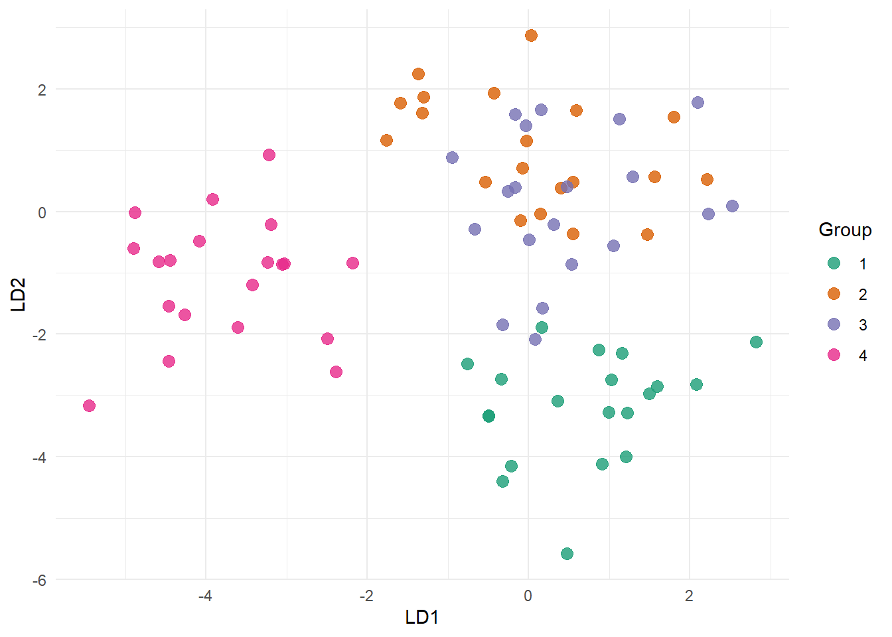

library(dplyr)
Attaching package: 'dplyr'The following objects are masked from 'package:stats':
filter, lagThe following objects are masked from 'package:base':
intersect, setdiff, setequal, unionlibrary(knitr)
library(ggplot2)STA2005S — Practice Paper (based on breakdown discussion)
To start:
data/ subfolder containing: pollution_data.csv, complaints_data.csv, yield_data.csv, student_data.csv, pcr_pls_data.csv, lda_data.csv..qmd in RStudio and render periodically to check it works.Each question has leading indicators telling you what should be reflected in your write-up:
echo = TRUE). Where a question says “from first principles”, you must obtain the output using the underlying formulae rather than a wrapper function (e.g. not lm(), not lda()), unless a part explicitly allows a package function for cross-checking.kable() is fine, but not required).| Section | Topic | Marks |
|---|---|---|
| Q1 | Factor Analysis | 13 |
| Q2 | Correspondence Analysis | 6 |
| Q3.1 | Regression | 5 |
| Q3.2 | Canonical Correlation Analysis (first principles) | 7 |
| Q3.3 | PCA / PCR / PLS | 15 |
| Q3.4 | Fisher’s LDA / CDA | 12 |
| MCQ | Multiple choice | 5 |
| Total available | 63 | |
| Marked out of | 60 |
You have five hours to complete the exam.
library(dplyr)
Attaching package: 'dplyr'The following objects are masked from 'package:stats':
filter, lagThe following objects are masked from 'package:base':
intersect, setdiff, setequal, unionlibrary(knitr)
library(ggplot2)We use data/pollution_data.csv: 150 days of measurements on 8 air-quality and weather variables (no2, so2, co, pm10, temp, humidity, windspeed, pressure).
# pollution <- read.csv("data/pollution_data.csv")
# head(pollution)
library(readr)
pollution <- read_csv("data/pollution_data.csv")Rows: 150 Columns: 8
── Column specification ────────────────────────────────────────────────────────
Delimiter: ","
dbl (8): no2, so2, co, pm10, temp, humidity, windspeed, pressure
ℹ Use `spec()` to retrieve the full column specification for this data.
ℹ Specify the column types or set `show_col_types = FALSE` to quiet this message.View(pollution)The data must be standardised when on different scales. The following data is measured on different scale. Mention example.
dat = scale(pollution)# Calculate correlation matrix:
cor_mat = cor(dat)
# Eigen decomposition:
eig_mat = eigen(cor_mat)
eig_val = eig_mat$values
eig_vec = as.matrix(eig_mat$vectors)
# Calculate loadings:
loadings = eig_vec[,1]%*%diag(sqrt(eig_val[1]))
round(loadings,4) [,1]
[1,] 0.3561
[2,] 0.3647
[3,] 0.3963
[4,] 0.3493
[5,] 0.3778
[6,] 0.3744
[7,] 0.2558
[8,] 0.3358# Calculate communalities:
h = diag(loadings%*%t(loadings))
h[1] 0.12680518 0.13297409 0.15707754 0.12197871 0.14272663 0.14019807 0.06545412
[8] 0.11278565# Variance explained:
tot_var = sum(eig_val)
prop_var = eig_val/tot_var
round(prop_var[1],4)[1] 0.3928factanal). (2)# Fit ML model using factanal:
fa_fit = factanal(dat,factors=2,rotation='none')
fa_fit$loadings
Loadings:
Factor1 Factor2
no2 0.622 -0.507
so2 0.579 -0.369
co 0.647 -0.365
pm10 0.619 -0.561
temp 0.639 0.521
humidity 0.584 0.448
windspeed 0.377 0.526
pressure 0.563 0.594
Factor1 Factor2
SS loadings 2.732 1.942
Proportion Var 0.341 0.243
Cumulative Var 0.341 0.584L = as.matrix(fa_fit$loadings)
psi = fa_fit$uniquenesses
psi_mat = diag(psi)
x_std = as.matrix(dat)
# Calculate factor scores:
f_hat = solve(t(L)%*%solve(psi_mat)%*%L)%*%t(L)%*%solve(psi_mat)%*%t(x_std)
head(round(t(f_hat),4)) Factor1 Factor2
[1,] 1.1079 -2.2189
[2,] -0.7895 -1.7441
[3,] 0.9887 0.0347
[4,] 0.8740 0.9744
[5,] 1.2688 0.3429
[6,] -0.3956 0.1469No
We use data/complaints_data.csv: complaint counts (Billing, Staff, Product, Delivery) logged at four store branches.
complaints <- read.csv("data/complaints_data.csv", row.names = 1)
kable(complaints)| Billing | Staff | Product | Delivery | |
|---|---|---|---|---|
| Claremont | 15 | 114 | 26 | 25 |
| Rondebosch | 81 | 23 | 26 | 10 |
| Observatory | 35 | 23 | 81 | 21 |
| Bellville | 13 | 18 | 24 | 65 |
summary(ca(complaints)), identify which branch contributes most to the inertia of the first dimension, and report its mass, quality (qlt), and contribution (ctr) on that dimension. (2)We use data/yield_data.csv: crop yield with soil pH and rainfall as predictors.
yield_dat <- read.csv("data/yield_data.csv")
head(yield_dat) soil_ph rainfall yield
1 5.695064 975.6657 38.49557
2 6.776846 935.6707 45.80271
3 7.004966 716.0285 39.92634
4 6.331517 928.9132 39.40496
5 5.557437 849.7850 33.65302
6 7.403106 851.6575 42.49757yield on soil_ph and rainfall. Display the estimated regression coefficients. (2)soil_ph. (2)We use data/student_data.csv: an “academic” set of variables (\(X^{(1)}\): gpa, test_score, attendance, study_hrs) and a “lifestyle” set (\(X^{(2)}\): sleep_hrs, exercise_hrs, stress).
student <- read.csv("data/student_data.csv")
head(student) gpa test_score attendance study_hrs sleep_hrs exercise_hrs stress
1 2.472021 44.88605 66.13718 8.548003 4.118988 2.619057 7.943406
2 3.413858 67.54172 83.69887 11.382488 6.418556 6.020176 4.423463
3 2.969083 76.12700 83.16482 11.073013 7.057402 4.492541 6.444590
4 3.508381 75.61346 91.16486 16.642311 6.510766 2.517052 7.436207
5 3.426051 60.59579 83.56215 10.200802 7.618963 4.213792 5.975793
6 3.092449 56.66548 86.85714 13.987187 7.650641 4.501010 4.384290cancor(). (2)We use data/pcr_pls_data.csv: a response y and ten correlated predictors x1–x10.
pcr_dat <- read.csv("data/pcr_pls_data.csv")
head(pcr_dat) x1 x2 x3 x4 x5 x6
1 0.05975352 -0.4694840 -0.48754363 0.07316868 -0.4172426 1.1353810
2 1.00004993 0.3563030 0.39892890 1.41100044 0.3379899 0.5464934
3 -1.24423453 -0.2233116 -1.06819034 -2.16900685 -0.7161039 -1.0720632
4 -0.87506669 0.4938453 0.09223401 -0.07107246 0.7576607 0.1115115
5 0.13830342 -0.3749849 -1.00618093 0.28225871 0.1267864 1.3649124
6 -0.56548574 0.5631223 -1.77110238 0.09880568 0.5954242 1.1361716
x7 x8 x9 x10 y
1 -0.00511333 0.4120179 0.21452165 1.21767710 3.620837
2 0.51988434 -0.9142609 1.19905661 0.40959982 11.975044
3 0.48517487 0.6125134 -0.09033798 0.64689322 5.215086
4 -0.18434224 2.0180442 0.87818839 -0.06968016 1.083173
5 0.76039254 -0.5194873 -0.06792794 2.22734766 -3.436157
6 0.36927396 1.9280992 0.42846682 1.06877843 3.265774y on your retained components. Report \(R^2\).
y on the ten predictors using the pls package, with the same number of components. Report \(R^2\). (4)We use data/lda_data.csv: four groups (G1–G4), 20 observations per group, and 6 variables (x1–x6).
lda_dat <- read.csv("data/lda_data.csv")
head(lda_dat) group x1 x2 x3 x4 x5 x6
1 G1 -5.556482 1.4123417 1.339500 1.9171219 0.7394433 2.51050832
2 G1 -2.599107 0.9824689 -4.505943 -2.7969497 -2.7196529 -0.07328372
3 G1 -4.772024 1.0086017 2.819267 -0.8348143 0.4747758 -0.21181923
4 G1 -4.417127 -0.5762293 -1.506249 0.6277286 -0.7755646 -0.70322016
5 G1 -5.790967 1.5556326 1.740616 0.3405192 0.5355312 1.93532294
6 G1 -2.990734 0.5277979 -0.255626 1.8775088 -0.9244795 1.50908190# STEP 1: Calculate everything we need for LDA
dat = lda_dat
dat$group = as.numeric(as.factor(dat$group))
X = as.matrix(dat[,-1]) # variables
g = length(unique(dat$group))
n_i = table(dat$group)
bar_overall = colMeans(X)
bar_group = dat |>
dplyr::group_by(group) |>
dplyr::summarise(
dplyr::across(everything(),mean),
.groups='drop'
) |>
dplyr::select(-group) |>
as.matrix()# STEP 2: Calculate B
B = Reduce(`+`,lapply(1:g,function(i){
n_i[i]*(bar_group[i,]-bar_overall)%*%t(bar_group[i,]-bar_overall)
}))# STEP 3: Calculate W
W = Reduce(`+`,lapply(1:g,function(i){
Xi = X[dat$group==i,]
cov(Xi)*(n_i[i]-1)
}))# STEP 4: Eigen decomposition
mat = solve(W)%*%B
eig_mat = eigen(mat)
eig_vec = eig_mat$vectors |> Re()
eig_val = eig_mat$values
S_pooled = W/(sum(n_i)-g)
sd_vec = diag(t(eig_vec)%*%S_pooled%*%eig_vec) |> sqrt()
sol = eig_vec%*%diag(1/sd_vec)
sol[,1:2] [,1] [,2]
[1,] -0.21701097 0.654855216
[2,] 0.14097196 -0.256379899
[3,] 0.10167297 0.144819580
[4,] -0.79534358 -0.181299602
[5,] -0.12817137 0.010920432
[6,] -0.05464956 -0.002046995# Calculate scores:
score1 = X%*%sol[,1]
score2 = X%*%sol[,2]
dat$LD1 = as.numeric(as.matrix(score1))
dat$LD2 = as.numeric(as.matrix(score2))
col_vec <- c(
"#1b9e77",
"#d95f02",
"#7570b3",
"#e7298a",
"#66a61e"
) |>
toupper()
ggplot(data=dat,
mapping=aes(x=LD1,
y=LD2,
colour=as.factor(group)))+
geom_point(size=3,alpha=0.8)+
theme_minimal()+
scale_colour_manual(
values=col_vec,
name='Group'
)
Question A (1) Suppose there is no correlation between any variables from two sets of variables. If we applied canonical correlation analysis, what would the values of the left canonical variate loadings be for the first pair?
Question B (1) Which scenario is likely to result in the largest canonical correlation, all other things being equal?
Question C (1) Suppose we post-multiply the loadings matrix of an orthogonal factor analysis by some orthonormal \(\mathbf{Q}\). What happens to the implied factors?
Question D (1) In Fisher’s LDA, if the pooled within-group SSCP matrix \(\mathbf{W}\) is singular, which of the following is true?
Question E (1) A PCA scree plot is essentially flat (all eigenvalues are roughly equal in size). What does this suggest?